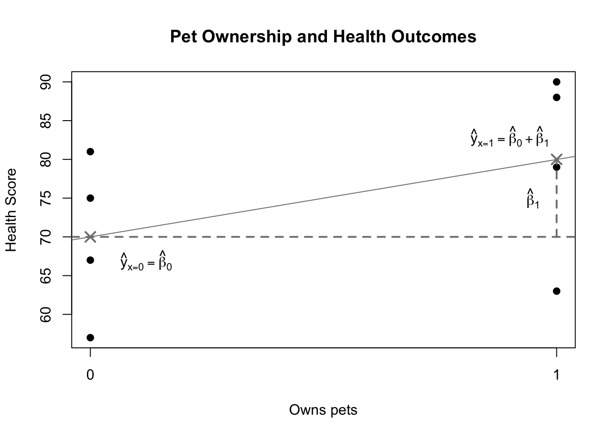
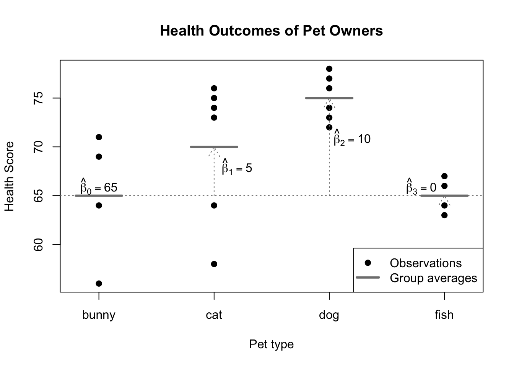

So far, all our predictors \(X\) have been continuous variables, much like our response variable \(Y\). However, linear regression fully supports qualitative/categorical and logical/binary predictors. Predictors such as these allow us to understand and model a tremendous variety of real-world connections between variables.
This section discusses models which use categorical predictors and it widens to include a broader set of predictors which we might create from the raw data and/or our hypotheses about the true generating process responsible for our data. When we create or alter predictors in this way, we often call the process feature engineering, since the individual predictors in a model are sometimes called the features.
Categorical prediction
Simply to ensure we understand one another, let’s first cover what I mean by a “categorical variable”. If you feel secure in your understanding of this definition, feel free to skip ahead.
Different data types
Binary data or logical data take on exactly two values. Even if the values are expressed numerically (such as \(1\) and \(0\), or \(-1\) and \(+1\)), they are not meant to suggest any broader continuüm of possible values. A lender may default on their mortgage, or stay current. A patient may die of their disease, or survive. A wager can result in a win, or a loss. Sometimes the data describe whether a condition is TRUE or FALSE — in these cases the binary data is sometimes called logical data, though the difference is usually only cosmetic.
Categorical data takes on qualitative values called ‘levels’, usually expressed in words, which cannot be meaningfully ordered or placed on a number line. The color of a car is categorical data, even though colors can be mapped to numbers in certain ways. Days of the week are categorical data, as are the menu items of a restaurant, the instructor name for each class in a degree program, or a list of airport codes.
Ordinal data contains levels which can be ranked in order, e.g. from worst to best, or least intense to most intense, or relative position between two poles. Although the levels can be ranked, and are sometimes represented by numbers, they are not properly numeric. The distance between them has no consistent or intrinsic meaning. A satisfaction score from 1 to 10 is ordinal data, as is the roast darkness of different coffees, hurricane Saffir-Simpson windspeed categories (1 – 5), academic rank within a high school class, or a survey question which presents the choices “Strongly Disagree”, “Disagree”, “Neutral”, “Agree”, and “Strongly Agree”.1
Interval data is truly numeric — each level can be assigned a meaningful spot on a number line, and the distance between levels has real-world significance. However, interval data lacks a true zero, which prevents proportional comparisons. When temperature is measured in Celsius or Fahrenheit, we cannot say that \(4^\circ\) is somehow “twice as hot” as \(2^\circ\). Longitudes are interval data, as are SAT test scores and FICO credit scores.
Ratio data is also truly numeric, and furthermore contains a meaningful zero which permits proportional comparisons. 200 meters is twice as far as 100 meters. A 400 Hz tone is half the frequency of an 800 Hz tone. A -5% stock return is just as large as a +5% stock return. Temperature measured in Kelvin is ratio data, as is the time between meteor impacts, the number of traffic tickets received by drivers, and countries’ median life expectancies.
Notice that I have not described these data types as continuous or discrete. Interval and ratio data can be discrete, and categorical or ordinal data can be (in theory) infinitely subdivisible. We may choose a concept such as the difficulty of a baseball pitch and represent it as ratio data (the pitch speed), as ordinal data (“fast”, “medium”, “slow”), or as categorical data (“curveball”, “slider”, “four-seam fastball”, “two-seam fastball”).
Using a binary variable as a predictor
Let’s see what would happen if we use a binary (1/0) variable as a predictor in a regression model, making no other changes to the model we’ve described so far. As an example, suppose that \(X\) describes pet ownership, and \(x_i=1\) describes an individual with a pet at home, while \(x_i=0\) describes an individual with no pets at home. \(Y\) will be a continuous measure of health outcomes, with larger values being considered healthier. We will start with a simple regression:
Consider a simple dataset: \(\boldsymbol{x}=\{1,1,1,1,0,0,0,0\}\) and \(\boldsymbol{y}=\{80,88,62,90,67,81,57,75\}\). Without worrying yet what it means, let’s simply apply the solutions we’ve learned for recovering the least-squares parameter estimates:
Notice that there are only two unique values of \(X\), and therefore only two possible predictions for \(Y\): one when \(x_i=0\) and one when \(x_i=1\):
The predicted health score for non-pet owners is 70, which is also the average of the four observations from the non-pet owners. The predicted health score for the pet owners is 80, which is also the average of the four observations from the pet owners. These are not coincidences; they follow from our prior Least Squares solutions and from what we know about \(\boldsymbol{x}\) being a vector of simple 1s and 0s.
Code
pet <-rep(1:0,each=4)health <-c(79,88,63,90,67,81,57,75)summary(lm(health~pet))
Call:
lm(formula = health ~ pet)
Residuals:
Min 1Q Median 3Q Max
-17.0 -5.5 2.0 8.5 11.0
Coefficients:
Estimate Std. Error t value Pr(>|t|)
(Intercept) 70.000 5.694 12.295 1.76e-05 ***
pet 10.000 8.052 1.242 0.261
---
Signif. codes: 0 '***' 0.001 '**' 0.01 '*' 0.05 '.' 0.1 ' ' 1
Residual standard error: 11.39 on 6 degrees of freedom
Multiple R-squared: 0.2045, Adjusted R-squared: 0.07192
F-statistic: 1.542 on 1 and 6 DF, p-value: 0.2606
Code
plot(pet,health,pch=19,main='Pet Ownership and Health Outcomes',xlab='Owns pets',ylab='Health Score',xaxt='n')axis(side=1,at=c(0,1),tick=TRUE)abline(h=70,lty=2,lwd=2,col='grey50')abline(a=70,b=10,lwd=1,col='grey50')points(x=c(0,1),y=c(70,80),pch=4,col='grey50',lwd=2,cex=1.5)lines(x=c(1,1),y=c(70,80),lty=2,lwd=2,col='grey50')text(x=0.12,y=67,expression(hat(y)[x==0]==hat(beta)[0]))text(x=0.95,y=75,expression(hat(beta)[1]))text(x=0.90,y=83,expression(hat(y)[x==1]==hat(beta)[0]+hat(beta)[1]))

Illustration of simple binary regression
The figure above shows an illustration of this simple binary case. The four health scores of non-pet owners are on the left side and the four health scores of the pet owners are on the right side (the black dots). Grey Xs mark the group means and grey lines mark the estimated betas. Let’s notice a few facts about this diagram:
The two parameters are asymmetric. \(\hat{\beta}_0\) represents a baseline health score, but \(\hat{\beta}_1\) represents the shift from one group (when \(x=0\)) to another (when \(x=1\)).
Consider what this means for a hypothesis test. If \(\beta_0\) were zero, then the true mean health score of the non-pet owners would be zero. This is both impossible and uninteresting. However, if \(\beta_1\) were zero, that is instead equivalent to asking whether the true mean health of the pet owners would be equal to the true mean health of the non-pet owners, which is possible and highly interesting.
Even though we no longer have a “line of best fit” through the data, \(\hat{\beta}_1\)can still be thought of as a slope. After all, slope is often summarized as “rise over run”. Because \(X\) only has two values, 0 and 1, the only possible change in \(X\) is a single unit. A one-unit shift in \(X\) still produces a \(\hat{\beta}_1\) shift in \(Y\).
Everything else about the model carries its usual interpretation. We can still examine the p-value of the predictor to learn whether \(\beta_1\) could truly be zero. We can still create confidence intervals for predictions, mean responses, and the parameter values. R2 still carries its usual interpretation of the proportion of variance in \(Y\) explained by variance in \(X\) (here we can say “explained by dog ownership or non-ownership”).
This very simple regression is actually identical to an earlier analytical method presented above: the two-sample t test with pooled variance. Both methods test for differences in the mean response between two groups of observations, using a t-test. Both methods assume that the two groups share a single variance. In fact, we can show that the two test statistics are algebraically equivalent.
Using a multi-level categorical variable as a predictor
Binary predictors give us a building block which we can use to replicate multi-level categorical predictors. Instead of a binary 1/0 pet ownership variable, consider a more complex categorical variable in which observed individuals can either own bunnies, cats, dogs, or goldfish:
Pet owned
Health score
Pet owned
Health score
Pet owned
Health score
Pet owned
Health score
bunny
56
cat
58
dog
73
fish
63
bunny
69
cat
76
dog
76
fish
66
bunny
64
cat
73
dog
77
fish
64
bunny
71
cat
75
dog
72
fish
67
cat
64
dog
74
cat
74
dog
78
It seems impossible to create a regression for this data. We cannot multiply a numeric beta by predictor values such as “bunny” or “fish”. We can’t treat the predictor as a single binary variable, since there are four different values, and no way to place these values along a number line. However, we can treat this data as three binary variables:
Pet owned
\(1\!\!1\{x_i=c\}\)
\(1\!\!1\{x_i=d\}\)
\(1\!\!1\{x_i=f\}\)
bunny
0
0
0
bunny
0
0
0
cat
1
0
0
cat
1
0
0
cat
1
0
0
dog
0
1
0
dog
0
1
0
fish
0
0
1
\(\ldots\)
\(\ldots\)
\(\ldots\)
\(\ldots\)
We have transformed the data from one four-level categorical predictor to three binary indicator variables which contain the same information.2 When the pet owned is a cat, then \(1\!\!1\{x_i=c\}=1\), and otherwise \(1\!\!1\{x_i=c\}=0\), and similarly for \(1\!\!1\{x_i=d\}\) and dogs, or \(1\!\!1\{x_i=f\}\) and fish. If we know that all three indicator variables are 0, then the pet owned must be a bunny, so we do not need a separate indicator for bunnies. Put another way, if we made the bunny indicator, we would find it’s an exact linear combination of the other indicators:
As before, we see that since there are only four unique values of the predictor, there will be only four unique fitted values. For example, when the observed individual owns a dog, then \(1\!\!1\{x_i=c\}=0\) and \(1\!\!1\{x_i=f\}=0\), and the expected value of \(Y\) simplifies to \(\beta_0+\beta_2\):
So, much like with the simple binary predictor, we see that the estimated intercept \(\hat{\beta}_0\) is added to every prediction, and that some predictions are “boosted” or “shifted” by an additional factor. It won’t surprise you to learn that these shifts are chosen to bring the fitted value of each group in line with the group mean:
Call:
lm(formula = healths ~ pets)
Residuals:
Min 1Q Median 3Q Max
-12.00 -2.00 1.00 3.25 6.00
Coefficients:
Estimate Std. Error t value Pr(>|t|)
(Intercept) 6.500e+01 2.616e+00 24.847 3.29e-14 ***
petscat 5.000e+00 3.377e+00 1.480 0.1582
petsdog 1.000e+01 3.377e+00 2.961 0.0092 **
petsfish -1.287e-14 3.700e+00 0.000 1.0000
---
Signif. codes: 0 '***' 0.001 '**' 0.01 '*' 0.05 '.' 0.1 ' ' 1
Residual standard error: 5.232 on 16 degrees of freedom
Multiple R-squared: 0.4406, Adjusted R-squared: 0.3357
F-statistic: 4.201 on 3 and 16 DF, p-value: 0.02266
Code
plot(healths~rep(1:4,times=c(4,6,6,4)),pch=19,col=1,xaxt='n',xlim=c(0.8,4.2),xlab='Pet type',ylab='Health Score',main='Health Outcomes of Pet Owners')axis(side=1,at=1:4,labels=c('bunny','cat','dog','fish'),tick=TRUE)segments(x0=(1:4)-0.2,y0=c(65,70,75,65),x1=(1:4)+0.2,y1=c(65,70,75,65),col='grey50',lwd=3)abline(h=65,col='grey50',lty=3)arrows(x0=2,y0=65,y1=70,col='grey50',length=0.15,lty=3)arrows(x0=3,y0=65,y1=75,col='grey50',length=0.15,lty=3)arrows(x0=4,y0=65,y1=65.01,col='grey50',length=0.15,lty=3)text(x=c(1,2.2,3.2,3.8),y=c(66,68,71,66),labels=c(expression(hat(beta)[0]==65),expression(hat(beta)[1]==5),expression(hat(beta)[2]==10),expression(hat(beta)[3]==0)))legend(x='bottomright',legend=c('Observations','Group averages'),pch=c(19,NA),lwd=c(NA,3),col=c('black','grey50'))

Illustration of regression with a categorical predictor
In the figure above, you can see that the average health score among bunny owners (65) becomes the benchmark against which other pet owners are measured. Sometimes this is called the reference level of a categorical predictor. In general, the choice of reference level is completely arbitrary: the model predictions, residuals, R2, and goodness-of-fit tests will all be the same. Because we can freely choose which level of the predictor becomes the reference level, we often choose a natural “default” level when one presents itself, such as the control group of a clinical experiment.3
With the reference level set, the estimated intercept \(\hat{\beta}_0\) will represent our prediction for \(Y\) when the predictor is set to the reference level. Each subsequent beta-hat \(\hat{\beta}_1,\hat{\beta}_2,\ldots,\hat{\beta}_k\) codes for the difference in group means between their level and the reference level. Statistical tests of whether each true parameter \(\beta_1,\beta_2,\ldots,\beta_k\) might equal 0 are essentially asking whether we have enough evidence to conclude that the groups have different true means, or whether we should believe a simpler view of the world where the two groups share the same mean response value.
Visualizer
#| '!! shinylive warning !!': |
#| shinylive does not work in self-contained HTML documents.
#| Please set `embed-resources: false` in your metadata.
#| standalone: true
#| viewerHeight: 960
library(shiny)
library(bslib)
ui <- page_fluid(
tags$head(tags$style(HTML("body {overflow-x: hidden;}"))),
title = "Customizable categorical regression",
fluidRow(column(width=4,sliderInput("n", "Total sample size", min=20, max=200, value=60, step=20)),
column(width=4,sliderInput("mu0","Bunny group mean", min=40, max=80, value=60, step=1)),
column(width=4,sliderInput("mu1","Cat group mean", min=40, max=80, value=60, step=1))),
fluidRow(column(width=4,sliderInput("mu2","Dog group mean", min=40, max=80, value=60, step=1)),
column(width=4,sliderInput("mu3","Fish group mean", min=40, max=80, value=60, step=1))),
fluidRow(plotOutput("distPlot1")),
fluidRow(tableOutput("distTable1"),))
server <- function(input, output) {
pets <- reactive(rep(c('bunny','cat','dog','fish'),
times=input$n*c(4,6,6,4)/20))
healths <- reactive(rep(c(input$mu0,input$mu1,input$mu2,input$mu3),
times=input$n*c(4,6,6,4)/20) + 5*rnorm(input$n))
output$distPlot1 <- renderPlot({
plot(NA,NA,xaxt='n',xlim=c(0.8,4.2),
xlab='Pet type',ylab='Health Score',main='Health Outcomes of Pet Owners',ylim=c(20,100))
axis(side=1,at=1:4,labels=c('bunny','cat','dog','fish'),tick=TRUE)
points(healths()~factor(pets()))
segments(x0=(1:4)-0.2,y0=tapply(healths(),pets(),mean),x1=(1:4)+0.2,
y1=tapply(healths(),pets(),mean),col='grey50',lwd=3)
legend(x='bottomright',legend=c('Observations','Group averages'),pch=c(19,NA),lwd=c(NA,3),col=c('black','grey50'))})
output$distTable1 <-renderTable(summary(lm(healths()~pets()))$coefficients,rownames=TRUE)
}
shinyApp(ui = ui, server = server)
Notice that some ordinal variables describe underlying concepts which we can also measure continuously, such as a hurricane’s wind speed or a student’s GPA-based academic rank.↩︎
When indicator variables are used to duplicate the information contained in a categorical variable, they are often called “dummy” variables.↩︎
Statistical software will always allow you to change the reference level, but different software environments use different default settings. In R, the lowest alphabetical level usually becomes the reference level, which is the choice used in the pet ownership example seen above.↩︎